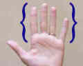
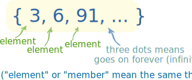
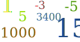
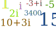
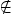
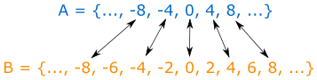
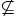

Introduction to Sets
Forget everything you know about numbers.
In fact, forget you even know what a number is.
This is where mathematics starts.
Instead of math with numbers, we will now think about math with "things".
Definition
What is a set? Well, simply put, it's a collection.
First we specify a common property among "things" (we define this word later) and then we gather up all the "things" that have this common property.

For example, the items you wear: hat, shirt, jacket, pants, and so on.
I'm sure you could come up with at least a hundred.
This is known as a set.
|
Or another example is types of fingers. This set includes index, middle, ring, and pinky. |
 |
So it is just things grouped together with a certain property in common.
Notation
There is a fairly simple notation for sets. We simply list each element (or "member") separated by a comma, and then put some curly brackets around the whole thing:

The curly brackets { } are sometimes called "set brackets" or "braces".
This is the notation for the two previous examples:
{socks, shoes, watches, shirts, ...}
{index, middle, ring, pinky}
Notice how the first example has the "..." (three dots together).
The three dots ... are called an ellipsis, and mean "continue on".
So that means the first example continues on ... for infinity.
(OK, there isn't really an infinite amount of things you could wear, but I'm not entirely sure about that! After an hour of thinking of different things, I'm still not sure. So let's just say it is infinite for this example.)
So:
- The first set {socks, shoes, watches, shirts, ...} we call an infinite set,
- the second set {index, middle, ring, pinky} we call a finite set.
But sometimes the "..." can be used in the middle to save writing long lists:
Example: the set of letters:
{a, b, c, ..., x, y, z}
In this case it is a finite set (there are only 26 letters, right?)
Numerical Sets
So what does this have to do with mathematics? When we define a set, all we have to specify is a common characteristic. Who says we can't do so with numbers?
Set of odd numbers: {..., −3, −1, 1, 3, ...}
Set of prime numbers: {2, 3, 5, 7, 11, 13, 17, ...}
Positive multiples of 3 that are less than 10: {3, 6, 9}
And so on. We can come up with all different types of sets.
We can also define a set by its properties, such as {x|x>0} which means "the set of all x's, such that x is greater than 0", see Set-Builder Notation to learn more.
And we can have sets of numbers that have no common property, they are just defined that way. For example:
{4, 5, 6, 10, 21}
{2, 949, 48282, 42882959, 119484203}
Are all sets that I just randomly banged on my keyboard to produce.
Why are Sets Important?
Sets are the fundamental property of mathematics. Now as a word of warning, sets, by themselves, seem pretty pointless. But it's only when we apply sets in different situations do they become the powerful building block of mathematics that they are.
Math can get amazingly complicated quite fast. Graph Theory, Abstract Algebra, Real Analysis, Complex Analysis, Linear Algebra, Number Theory, and the list goes on. But there is one thing that all of these share in common: Sets.
Universal Set
|
At the start we used the word "things" in quotes. We call this the universal set. It's a set that contains everything. Well, not exactly everything. Everything that is relevant to our question. |
||
|  |
In Number Theory the universal set is all the integers, as Number Theory is simply the study of integers. |
|
 |
But in Calculus (also known as real analysis), the universal set is almost always the real numbers. |
|
|  | And in complex analysis, you guessed it, the universal set is the complex numbers. |
Some More Notation
 |
When talking about sets, it is fairly standard to use Capital Letters to represent the set, and lowercase letters to represent an element in that set. So for example, A is a set, and a is an element in A. Same with B and b, and C and c. |
Now you don't have to listen to the standard, you can use something like m to represent a set without breaking any mathematical laws (watch out, you can get π years in math jail for dividing by 0), but this notation is pretty nice and easy to follow, so why not?
Also, when we say an element a is in a set A, we use the symbol to show it.
And if something is not in a set use .
Example: Set A is {1,2,3}. We can see that 1 A, but 5 A
Equality
Two sets are equal if they have precisely the same members. Now, at first glance they may not seem equal, so we may have to examine them closely!
Example: Are A and B equal where:
- A is the set whose members are the first four positive whole numbers
- B = {4, 2, 1, 3}
Let's check. They both contain 1. They both contain 2. And 3, And 4. And we have checked every element of both sets, so: Yes, they are equal!
And the equals sign (=) is used to show equality, so we write:
A = B
Example: Are these sets equal?
- A is {1, 2, 3}
- B is {3, 1, 2}
Yes, they are equal!
They both contain exactly the members 1, 2 and 3.
It doesn't matter where each member appears, so long as it is there.

Subsets
When we define a set, if we take pieces of that set, we can form what is called a subset.
Example: the set {1, 2, 3, 4, 5}
A subset of this is {1, 2, 3}. Another subset is {3, 4} or even another is {1}, etc.
But {1, 6} is not a subset, since it has an element (6) which is not in the parent set.
In general:
A is a subset of B if and only if every element of A is in B.
So let's use this definition in some examples.
Example: Is A a subset of B, where A = {1, 3, 4} and B = {1, 4, 3, 2}?
1 is in A, and 1 is in B as well. So far so good.
3 is in A and 3 is also in B.
4 is in A, and 4 is in B.
That's all the elements of A, and every single one is in B, so we're done.
Yes, A is a subset of B
Note that 2 is in B, but 2 is not in A. But remember, that doesn't matter, we only look at the elements in A.
Let's try a harder example.
Example: Let A be all multiples of 4 and B be all multiples of 2.
Is A a subset of B? And is B a subset of A?
Well, we can't check every element in these sets, because they have an infinite number of elements. So we need to get an idea of what the elements look like in each, and then compare them.
The sets are:
- A = {..., −8, −4, 0, 4, 8, ...}
- B = {..., −8, −6, −4, −2, 0, 2, 4, 6, 8, ...}
By pairing off members of the two sets, we can see that every member of A is also a member of B, but not every member of B is a member of A:

So:
A is a subset of B, but B is not a subset of A
Proper Subsets
If we look at the defintion of subsets and let our mind wander a bit, we come to a weird conclusion.
Let A be a set. Is every element of A in A?
Well, umm, yes of course, right?
So that means that A is a subset of A. It is a subset of itself!
This doesn't seem very proper, does it? If we want our subsets to be proper we introduce (what else but) proper subsets:
A is a proper subset of B if and only if every element of A is also in B, and there exists at least one element in B that is not in A.
This little piece at the end is there to make sure that A is not a proper subset of itself: we say that B must have at least one extra element.
Example:
{1, 2, 3} is a subset of {1, 2, 3}, but is not a proper subset of {1, 2, 3}.
Example:
{1, 2, 3} is a proper subset of {1, 2, 3, 4} because the element 4 is not in the first set.
Notice that when A is a proper subset of B then it is also a subset of B.
Even More Notation
When we say that A is a subset of B, we write A B.
Or we can say that A is not a subset of B by A  B ("A is not a subset of B")
When we talk about proper subsets, we take out the line underneath and so it becomes A B or if we want to say the opposite, A  B.
B.
Empty (or Null) Set
This is probably the weirdest thing about sets.

As an example, think of the set of piano keys on a guitar.
"But wait!" you say, "There are no piano keys on a guitar!"
And right you are. It is a set with no elements.
This is known as the Empty Set (or Null Set).There aren't any elements in it. Not one. Zero.
It is represented by
Or by {} (a set with no elements)
Some other examples of the empty set are the set of countries south of the south pole.
So what's so weird about the empty set? Well, that part comes next.
Empty Set and Subsets
So let's go back to our definition of subsets. We have a set A. We won't define it any more than that, it could be any set. Is the empty set a subset of A?
Going back to our definition of subsets, if every element in the empty set is also in A, then the empty set is a subset of A. But what if we have no elements?
It takes an introduction to logic to understand this, but this statement is one that is "vacuously" or "trivially" true.
A good way to think about it is: we can't find any elements in the empty set that aren't in A, so it must be that all elements in the empty set are in A.
So the answer to the posed question is a resounding yes.
The empty set is a subset of every set, including the empty set itself.
Order
No, not the order of the elements. In sets it does not matter what order the elements are in.
Example: {1,2,3,4} is the same set as {3,1,4,2}
When we say order in sets we mean the size of the set.
Another (better) name for this is cardinality.
A finite set has finite order (or cardinality). An infinite set has infinite order (or cardinality).
For finite sets the order (or cardinality) is the number of elements.
Example: {10, 20, 30, 40} has an order of 4.
For infinite sets, all we can say is that the order is infinite. Oddly enough, we can say with sets that some infinities are larger than others, but this is a more advanced topic in sets.
Arg! Not more notation!
Nah, just kidding. No more notation.
| by
Ricky Shadrach and
Rod Pierce |